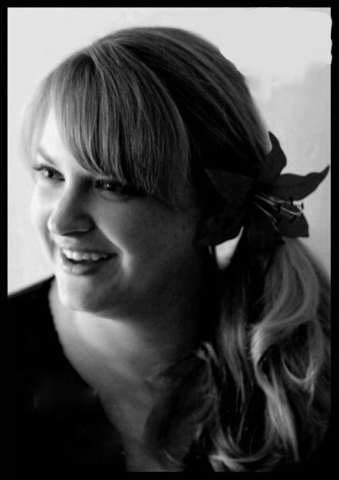

Number
919
Favorite Position
Blocker
Theme Song
Lose Yourself - Eminem
When did you join and why did you start playing?
I had a friend that talked me into coming to a fresh meat practice in January of 2011. I fell in love with it that night and I've been playing ever since.
What keeps you going?
My team. We are all very supportive of each other and push one another when we need to.
What's you favorite thing about you team?
I love that we are like an extended family. I can count on anyone at anytime! And of course the dancing :D
What's your favorite thing to wear to practice?
I'm happiest in shorts and a tank top.
What type of wheels/skates do you use?
I am currently skating in Antiks with Psyco 88 wheels
What are your dreams skate/wheels?
I am skating in them. Antiks are like heaven on your feet!